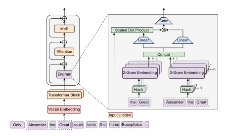
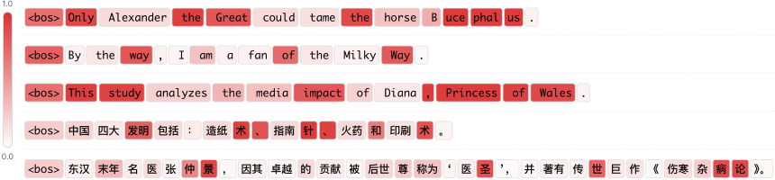
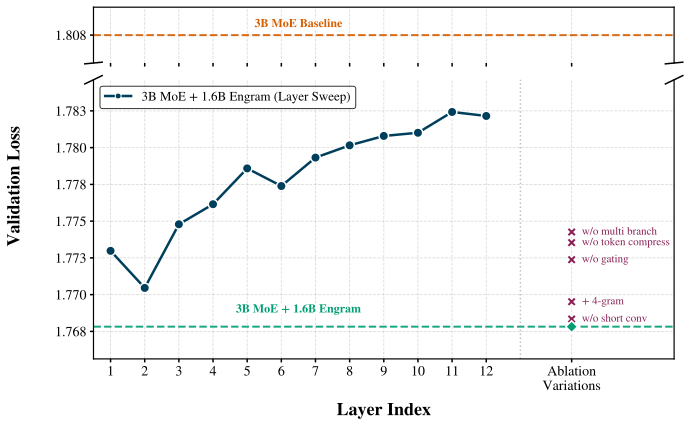
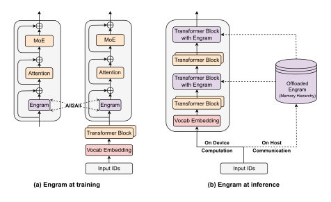

언어 모델이 인명이나 관용구를 읽는 상황을 생각해 보자. “Diana, Princess of Wales”라는 표현에서 마지막 토큰을 이해하려면 앞의 여러 토큰이 하나의 인물을 가리킨다는 사실을 모아야 한다. Transformer는 attention과 FFN을 여러 층 거치면서 이런 표현을 구성한다. Engram 논문은 이 과정에 질문을 던진다. 자주 등장하고 형태가 비교적 고정된 패턴까지 매번 여러 층의 계산으로 다시 만들어야 할까?
베이징대와 DeepSeek 연구진이 제안한 Engram은 이런 패턴을 학습된 메모리 테이블에서 읽어 오는 모듈이다. 제목의 ‘암기와 사고’는 이 역할 분담을 이해하기 위한 비유다. 모델이 사람처럼 두 종류의 정신 활동을 갖는다는 주장은 아니다. 논문에서 실제로 구분하는 것은 입력에 따라 신경망을 계산하는 경로와, 입력 토큰으로 주소를 정해 임베딩을 조회하는 경로다.
논문은 2026년 1월 12일 처음 공개됐으며, 여기서는 7월 12일 개정된 v2를 읽었다. 그림은 해당 버전의 원본이고, 수치는 본문 표를 기준으로 옮겼다. 그림을 누르면 원래 크기로 열 수 있다.
계산하는 경로 옆에 조회하는 경로를 두기
MoE는 모든 expert를 매번 사용하지 않고, 토큰마다 일부 expert를 골라 계산한다. 총 파라미터 수를 크게 늘려도 한 토큰을 처리할 때 실제로 계산하는 양은 상대적으로 작게 유지할 수 있다. Engram은 여기에 다른 종류의 희소성을 더한다. 어떤 신경망을 실행할지 고르는 대신, 큰 테이블의 어느 행을 읽을지 고르는 방식이다.
테이블에 들어 있는 것은 사람이 읽을 수 있는 문서나 정답 문장이 아니라 학습되는 벡터다. 입력 주변의 짧은 토큰 묶음으로 이 벡터를 찾고, 현재 문맥에 맞춰 조절한 다음 Transformer의 은닉 상태에 더한다. attention과 MoE는 그대로 남아 있다. Engram이 모델 전체를 대체하는 구조로 읽으면 뒤의 실험을 이해하기 어려워진다.

그림 1의 오른쪽을 아래에서 위로 읽으면 흐름이 보인다. “Alexander the Great”의 마지막 위치에서 “the Great”라는 2-gram과 “Alexander the Great”라는 3-gram을 구성한다. 각각의 해시 결과로 임베딩을 찾고, 여러 벡터를 이어 붙인다. 그 위의 Linear와 Scaled Dot Product는 조회한 내용을 현재 은닉 상태와 비교해 반영량을 정하는 부분이다. 마지막에는 짧은 convolution을 거쳐 본체의 표현에 합쳐진다.
여기서 검색어가 긴 질문 전체가 아니라 짧은 지역 패턴이라는 점을 기억해 두면 좋다. Engram은 현재 문맥 전체와 비슷한 문서를 찾아오는 검색 엔진과는 다른 위치에서 작동한다. 문맥 전체를 처리하는 일은 여전히 본체의 attention과 나머지 계산 경로가 담당한다. §2
N-gram이 메모리 주소가 되는 과정
N-gram은 연속된 N개 토큰의 묶음이다. 이 논문의 주요 설정에서는 2-gram과 3-gram을 사용한다. 토큰은 단어와 정확히 일치하지 않으므로, 세 토큰을 묶었다고 언제나 세 단어를 보는 것은 아니다. 특히 한국어처럼 하나의 단어가 여러 토큰으로 나뉘는 경우에는 같은 N에서도 실제로 덮는 언어적 범위가 달라질 수 있다.
가능한 모든 토큰 조합에 각각 별도 벡터를 주면 테이블이 지나치게 커진다. 어휘 수가 V일 때 길이 3인 조합만 생각해도 가능한 경우의 수는 V의 세제곱이다. Engram은 조합 전체를 저장하지 않고, 토큰 묶음을 해시 함수에 넣어 정해진 크기의 테이블 안에 배치한다. 해시 테이블의 행을 읽는 것은 그 행에 학습된 벡터를 가져오는 연산이다.
해시에는 서로 다른 입력이 같은 주소로 가는 충돌이 있다. 그래서 하나의 주소만 사용하지 않고 여러 해시 head로 조회한 결과를 이어 붙인다. 하나의 head에서 충돌하더라도 다른 head까지 같은 방식으로 겹치지는 않도록 표현 경로를 여러 개 두는 셈이다. 이것이 충돌을 완전히 없앤다는 뜻은 아니다.
조회 전에는 tokenizer compression도 수행한다. 대소문자나 앞쪽 공백 등 때문에 서로 다른 ID를 받은 표기를 정규화해, 메모리 주소를 만들 때 쓰는 ID를 묶는다. 논문에서는 NFKC와 소문자화 등을 사용해 128k tokenizer의 유효 어휘 수를 약 23% 줄였다고 보고한다. 원래 입력을 복원해야 하는 tokenizer와, 패턴을 모아 저장하려는 메모리의 목적이 다르기 때문에 가능한 선택이다. §2.2
이 단계는 다음처럼 줄여 쓸 수 있다. 실제 구현에서는 N-gram 길이별로 여러 head와 테이블을 사용한다.
g(t, n) = 현재 위치 t에서 끝나는 정규화된 n개 토큰
address(t, n, k) = hash_k(g(t, n))
memory(t) = 조회한 각 테이블의 벡터를 이어 붙인 값테이블 크기를 늘려도 토큰마다 읽는 head와 행의 수를 고정하면 조회 개수는 늘지 않는다. 논문의 O(1) 설명은 이런 조회 구조에 관한 것이다. 메모리를 늘렸을 때 저장 공간과 하드웨어 접근 비용까지 사라지는 것으로 해석하면 안 된다.
같은 표현도 문맥에 따라 다르게 반영하기
같은 토큰 묶음은 같은 주소를 가리키지만, 그 표현이 문장 안에서 하는 역할까지 항상 같지는 않다. 해시 충돌로 관련 없는 정보가 섞였을 가능성도 있다. 주소를 정하는 과정만으로는 이런 차이를 처리할 수 없어서, Engram은 조회 이후에 문맥을 이용하는 게이트를 둔다.
현재 은닉 상태를 query로 사용하고, 조회한 메모리를 key와 value로 투영한다. query와 key의 정렬 정도로 0과 1 사이의 게이트 값을 구한 뒤 value에 곱한다. 테이블을 읽는 주소는 입력 토큰으로 결정되지만, 읽은 내용을 얼마나 사용할지는 앞선 층에서 만들어진 문맥 표현에 따라 달라진다. §2.3
key = Wk × memory
value = Wv × memory
gate = sigmoid(정규화된 hidden과 key의 내적 / √d)
gated_value = gate × value게이트를 거친 벡터에는 짧은 depthwise causal convolution과 residual 경로가 적용된다. 과거의 가까운 위치를 함께 사용하면서 비선형 변환을 더하는 단계다. 여기서 causal이라는 조건은 현재 위치를 계산할 때 미래 토큰을 보지 않는다는 뜻이다. 이후 이 결과를 Transformer의 은닉 상태에 더한다.

이 그림은 “By the way”, “the Milky Way”, “Princess of Wales” 같은 고정된 표현이 완성되는 위치에서 게이트가 어떻게 달라지는지 보여준다. 마지막 토큰의 색은 그 토큰 하나의 중요도라기보다, 그 위치에서 끝나는 N-gram에 대한 반영량으로 읽는 편이 맞다.
다만 논문은 모든 branch에서 똑같이 해석 가능한 패턴이 나오지는 않았다고 적고, 의미 있는 패턴과 상관이 큰 게이트를 골라 시각화했다. 따라서 이 몇 문장을 모델 전체의 보편적인 동작으로 확대하기는 어렵다. 사람이 보기에 색이 그럴듯하다는 것과, 그 벡터가 정확히 어떤 사실을 저장하는지 규명하는 것도 별개의 문제다.
expert를 줄이고 메모리를 늘리면 어떻게 될까
메모리 모듈을 추가한 모델이 좋아졌다는 사실만으로는 설계의 효율을 판단하기 어렵다. 단순히 파라미터가 더 많아졌기 때문일 수도 있다. 그래서 논문은 총 파라미터와 계산 예산을 고정한 상태에서, 일부 MoE expert를 줄이고 그 자리를 Engram 메모리에 배분하는 실험을 한다.
그림 3의 가로축 ρ는 희소 파라미터 예산 중 MoE 쪽에 남긴 비율이다. 오른쪽 끝의 100%는 이 예산을 전부 MoE에 주는 경우다. 왼쪽으로 갈수록 expert 몫을 줄여 메모리에 더 배분한다. 모델의 전체 파라미터 중 80%를 MoE에 쓴다는 의미와는 다르다. 비율의 분모가 무엇인지 먼저 확인해야 한다.

왼쪽 그래프의 세로축은 validation loss이므로 낮을수록 좋다. 두 계산 예산 모두 ρ가 약 75~80%일 때 손실이 낮았고, 양쪽 끝으로 이동하면 다시 나빠지는 U자형 경향이 나타난다. 이 설정에서는 희소 예산의 약 20~25%를 메모리로 돌리는 것이 유리했다. 계산하는 expert를 모두 없애고 메모리만 남기는 방향이 답은 아니었다.
오른쪽 그래프는 질문이 조금 다르다. 본체를 고정하고 메모리 슬롯 수를 늘리면 어떤 일이 생기는지 본다. x축이 로그 스케일이라는 점에 주의해서 보면, 실험 범위 안에서 메모리가 커질수록 손실이 내려간다. 같은 메모리 예산에서 Engram이 비교 대상인 OverEncoding보다 더 낮은 손실을 보인다.
여기서 20~25%라는 수치를 모든 LLM에 적용할 설계 규칙으로 받아들이면 곤란하다. 실험한 모델 규모, 희소성, 데이터와 학습 예산 안에서 관측된 최적점이다. 이 그림이 보여주는 더 일반적인 질문은 저장과 계산 중 한쪽만 늘리는 것보다, 둘의 배분도 함께 최적화할 필요가 있느냐는 것이다. §3
27B 비교에서 실제로 달라진 것
본격적인 사전학습 비교에는 Dense-4B, MoE-27B, Engram-27B, Engram-40B가 등장한다. 이 중 구조의 효과를 보기에 가장 직접적인 쌍은 MoE-27B와 Engram-27B다. 두 모델은 총 파라미터가 각각 26.7B이며, 어휘 임베딩을 제외한 활성 파라미터는 3.8B로 맞췄다. 같은 순서의 데이터로 262B 토큰을 학습한다.
Engram-27B에서는 routed expert를 72개에서 55개로 줄이고, 확보한 예산으로 5.7B 크기의 메모리 모듈을 둔다. Engram은 2번째와 15번째 층에 삽입된다. 이 비교를 “같은 MoE에 메모리를 공짜로 더했다”라고 설명하면 실험 의도와 달라진다. 비슷한 총량의 자원을 다른 종류의 파라미터에 배분한 비교다.
| 벤치마크 · 지표 | MoE-27B | Engram-27B | 차이 |
|---|---|---|---|
| MMLU · Acc. | 57.4 | 60.4 | +3.0 |
| CMMLU · Acc. | 57.9 | 61.9 | +4.0 |
| ARC-Challenge · Acc. | 70.1 | 73.8 | +3.7 |
| BBH · EM | 50.9 | 55.9 | +5.0 |
| HumanEval · Pass@1 | 37.8 | 40.8 | +3.0 |
| MATH · EM | 28.3 | 30.7 | +2.4 |
지식 평가뿐 아니라 BBH, 코드 생성, 수학에서도 개선이 나온다는 점이 흥미롭다. 정적인 패턴을 읽는 모듈이 왜 추론 문제에도 도움이 될까? 연구진은 초반 층이 익숙한 표현을 조합하는 부담을 덜면서, 뒤의 계산이 더 복잡한 처리에 쓰일 수 있다고 해석한다. 다음 절의 내부 표현 분석은 이 해석을 뒷받침하려는 실험이다.
개선 폭을 읽을 때 단위도 구별해야 한다. 50.9에서 55.9로 오른 것은 5.0%p이며, 상대적인 5% 향상과 같지 않다. 또 초록에는 MMLU +3.4가 나오지만 v2의 Table 1에서 MMLU는 +3.0이고, MMLU-Redux가 +3.4다. 여기서는 벤치마크 이름과 직접 대조할 수 있는 표를 따랐다.
Engram-40B는 메모리를 18.5B로 늘린 별도의 확장 실험이다. 활성 파라미터 예산은 같지만 총 파라미터가 39.5B이므로, 27B끼리의 비교와 구분해서 읽어야 한다. 이 모델이 모든 평가에서 Engram-27B를 이기는 것도 아니다. 예를 들어 HumanEval은 38.4로 Engram-27B의 40.8보다 낮다. §4 · Table 1
‘실질적으로 더 깊어진다’는 말의 의미
Engram을 넣어도 Transformer 층의 개수가 갑자기 늘어나는 것은 아니다. 논문이 effective depth라는 표현을 쓰는 이유는 같은 깊이에서 형성되는 표현의 차이에 있다. 같은 일을 더 이른 층에서 마치면, 이후 층이 다른 계산에 활용될 여지가 생긴다는 해석이다.

왼쪽은 각 층의 은닉 상태를 최종 출력 head로 투영했을 때, 그 분포가 모델의 최종 출력과 얼마나 다른지 보는 LogitLens 분석이다. KL divergence가 작을수록 중간 표현의 예측이 최종 예측에 가깝다. Engram의 초반 층에서 이 값이 상대적으로 낮다는 것은, 최종 예측에 가까운 표현이 더 일찍 나타난다는 관측이다.
가운데와 오른쪽은 CKA라는 표현 유사도 지표를 사용한다. x축은 Engram의 층, y축은 MoE의 층이다. 같은 번호의 층끼리만 비슷하다면 주로 대각선 부근을 보게 된다. 흰 점선이 대각선 위쪽으로 이동한 구간은 Engram의 비교적 얕은 층이 MoE의 더 깊은 층과 비슷한 표현을 만든다는 방향으로 읽을 수 있다.
논문은 Engram-27B의 5번째 층이 MoE의 약 12번째 층과 가까운 예를 든다. 다만 표현의 유사도가 계산 과정 전체의 동일성을 보장하지는 않는다. 층 수를 실제로 일곱 개 늘린 것과 같다고 환산하거나, 이 그림만으로 어떤 추론 알고리즘을 수행한다고 결론내릴 수는 없다. 연구진이 제안한 설명과 이를 지지하는 관측을 구분해서 보는 편이 좋다. §6.1
메모리는 어느 층에 넣어야 할까
조회 모듈은 입력 바로 다음에 붙이면 될 것 같지만, 실제로는 두 요구가 충돌한다. 초반에 넣으면 지역 패턴을 재구성하는 부담을 일찍 덜어 줄 수 있다. 반대로 너무 이른 층에서는 현재 은닉 상태가 넓은 문맥을 충분히 담지 못해 게이트가 조회 결과를 판단하기 어려울 수 있다.

이 실험은 앞의 27B 모델과 구성이 다르다. 12층 3B MoE에 총 1.6B의 Engram 메모리를 배정하고 100B 토큰을 학습한다. 왼쪽 곡선은 메모리를 한 곳에 모아 넣는 위치를 바꾼 것이다. 이 설정에서는 2번째 층의 손실이 1.770으로 가장 낮다. 같은 메모리 예산을 둘로 나눠 2번째와 6번째 층에 넣으면 1.768로 조금 더 내려간다.
오른쪽의 점들은 어떤 요소를 빼면 성능이 나빠지는지 보여준다. 문맥 게이트, tokenizer compression, branch별 결합을 제거했을 때의 손실 증가가 눈에 띈다. 메모리 테이블의 크기만으로 모든 효과를 설명하기 어렵고, 읽어 온 내용을 본체에 연결하는 방법도 중요하다는 근거다.
그림의 y축에는 끊어진 구간이 있으므로 점 사이의 거리를 그대로 비례 비교해서는 안 된다. 또한 convolution을 뺐을 때의 영향이 이 실험에서는 상대적으로 작았다는 것과, 모든 규모에서 없어도 된다는 결론은 다르다. §6.2
짧은 패턴의 조회가 긴 문맥에도 도움이 될까
Engram이 직접 읽는 것은 짧은 N-gram이지만, 논문은 긴 문맥에서도 차이를 확인한다. 지역 패턴 처리를 메모리로 넘겨 본체의 attention이 더 넓은 관계에 쓸 여유를 얻는다는 가설이다. 이를 확인하기 위해 사전학습 이후 동일한 절차로 문맥 길이를 32,768 토큰까지 확장한다.
여기서는 사전학습이 끝난 50k-step 체크포인트뿐 아니라 Engram의 46k-step 체크포인트도 함께 비교한다. 46k를 따로 고른 것은 MoE의 50k 모델과 사전학습 loss가 비슷하기 때문이다. 학습량을 맞추는 비교와, 출발점의 loss를 맞추는 비교를 나눠 본 셈이다.
| 사전학습 체크포인트 | Multi-query NIAH | Variable Tracking |
|---|---|---|
| MoE-27B · 50k | 84.2 | 77.0 |
| Engram-27B · 46k | 97.0 | 87.2 |
| Engram-27B · 50k | 97.0 | 89.0 |
Multi-query NIAH는 긴 입력 안에 삽입된 여러 정보를 질의로 찾아내는 평가이고, Variable Tracking은 문맥 안에서 연결된 변수의 상태를 따라가는 평가다. 문맥에 이미 주어진 정보를 처리하는 과제이므로, 대화 밖의 과거 사실을 영구적으로 기억하는 능력을 직접 측정한 것은 아니다.
표에 옮긴 두 항목에서는 개선이 크지만, 이것만으로 긴 문맥에서 생기는 모든 문제가 해결됐다고 볼 수는 없다. 실제 RAG나 코드 저장소 분석에서는 검색 품질, 지시 이행, 정보 간 충돌처럼 별도 요소도 작용한다. 여기서 확인한 범위는 해당 모델과 문맥 확장 절차, 그리고 평가 과제 안의 결과다. §5 · Table 2
GPU 밖에 저장해도 속도가 유지되는 이유
큰 임베딩 테이블을 GPU 메모리에 전부 두어야 한다면 저장 용량 자체가 제약이 된다. Engram은 어느 행을 읽을지가 입력 토큰만으로 결정된다는 점을 이용한다. 해당 층의 은닉 상태가 만들어질 때까지 기다리지 않고, 앞으로 필요한 메모리를 미리 가져올 수 있다. MoE에서 은닉 상태를 보고 expert를 선택하는 동작과 다른 부분이다.

왼쪽은 학습 상황이다. 큰 테이블을 여러 GPU에 분산하고, 필요한 행을 All-to-All 통신으로 모은다. 오른쪽은 추론 상황으로, 테이블은 host memory에 두고 필요한 벡터를 GPU로 보낸다. 앞쪽 Transformer 블록이 계산하는 동안 전송을 진행하면 통신 시간의 일부를 가릴 수 있다.
이 점은 모듈의 삽입 위치와도 연결된다. 메모리를 아주 처음에 읽어야 한다면 전송을 가릴 계산 시간이 부족하다. 조금 뒤에 삽입하면 앞선 블록의 계산 동안 준비할 시간이 생긴다. 반면 너무 늦게 넣으면 지역 패턴 처리를 미리 덜어 주려던 목적과 멀어진다. 모델링과 시스템 지연을 함께 고려해야 하는 이유다.
| 본체 | 기본 tok/s | 100B Engram 추가 | 처리량 감소 |
|---|---|---|---|
| Dense-4B | 9,031.62 | 8,858.28 | 약 1.9% |
| Dense-8B | 6,315.52 | 6,140.02 | 약 2.8% |
이 측정의 본체는 앞에서 품질을 평가한 MoE-27B가 아니라 Dense-4B와 Dense-8B다. MoE의 expert 병렬 통신이 섞이는 영향을 피하려고 구성한 추론 실험이다. 그러므로 “27B 모델에 100B 메모리를 붙여도 모든 환경에서 3%만 느려진다”라고 합쳐 설명해서는 안 된다.
표는 주어진 배치에서의 전체 처리량을 측정한다. 개인 PC의 한 사용자 응답 지연이나 저배치 추론까지 같은 비율로 보장하는 결과는 아니다. 실제 적용에서는 RAM 용량, PCIe 대역폭, 본체의 계산 시간, 동시에 처리하는 시퀀스 수를 함께 확인해야 한다. 논문의 저장·계산 분리는 데이터 이동 비용을 없애는 방식이 아니라, 예측 가능한 이동을 앞당겨 실행하는 설계로 이해할 수 있다. §6.4
RAG나 대화 기억과는 무엇이 다른가
‘메모리’라는 표현 때문에 Engram을 사용자의 대화를 오래 보관하는 기능으로 받아들이기 쉽다. 하지만 이 논문의 테이블은 학습 과정에서 형성된 파라미터다. 사용자가 오늘 말한 내용을 내일 다시 꺼내 쓰기 위해 대화를 기록하고 검색하는 기능과는 목적과 갱신 방식이 다르다.
RAG의 원 논문은 위키피디아 구절을 검색하는 비파라미터 메모리와 생성 모델을 결합한다. 검색 결과는 문서 구절이며, 어떤 자료를 근거로 답하는지 연결할 수 있다. Engram에서 읽는 것은 모델의 계산에 들어가는 임베딩이다. 사용자 문서를 테이블에 복사해 두면 곧바로 같은 방식의 근거 검색이 되는 구조는 아니다. RAG 원 논문
앞서 정리한 Mamba는 또 다른 문제를 다룬다. Mamba의 recurrent state는 현재 시퀀스를 읽으며 갱신되는 상태다. Engram의 학습된 패턴 테이블과는 정보가 만들어지고 유지되는 방식이 다르다. 둘 다 효율과 기억을 이야기하지만, 하나는 시퀀스를 상태로 처리하는 구조이고 다른 하나는 Transformer 내부에 조회 경로를 보태는 모듈이다. Mamba 원 논문
따라서 셋을 단순히 더 좋은 기억 장치 순서로 줄 세우기는 어렵다. 문서를 찾아 근거를 제공할 것인지, 긴 입력의 상태를 효율적으로 갱신할 것인지, 반복되는 패턴을 싼 조회로 처리할 것인지부터 구분하면 각 설계가 겨냥한 지점이 분명해진다.
논문을 읽고 남는 질문
Engram에서 관심이 가는 부분은 오래된 N-gram을 최신 모델에 다시 가져왔다는 사실만은 아니다. 계산으로 처리하던 일부 작업에 별도의 저장 공간을 배정하고, 그 배분을 통제된 실험으로 살펴봤다는 점이다. 모델을 키우는 방향을 expert 수나 층 수에만 한정하지 않고, 어떤 형태의 파라미터에 예산을 쓸지도 설계 변수로 둔다.
동시에 논문의 결과만으로 답하기 어려운 질문도 남는다. 한국어처럼 토큰 분할 양상이 다른 언어에서 같은 메모리 예산이 얼마나 유리할지, 덜 등장하는 표현은 해시 충돌과 용량 제약의 영향을 얼마나 받을지 확인할 필요가 있다. 문서나 사실이 바뀌었을 때 테이블의 지식을 어떤 비용으로 갱신할 수 있는지도 이 글에서 본 벤치마크만으로 판단하기 어렵다.
공식 저장소에는 데이터 흐름을 살펴볼 수 있는 데모가 있다. 다만 README는 attention, MoE, mHC 같은 일부 구성 요소를 모사한 코드라고 명시한다. 데모에서 해시와 게이트가 어떻게 이어지는지 확인하는 것과, 논문 수준의 학습·처리량 결과를 재현하는 것은 구분해야 한다. 공식 구현과 데모 안내
이 논문을 통해 다시 보게 되는 것은 ‘기억’의 구현 위치다. 같은 내용을 알고 있는 모델이라도 매번 여러 층에서 재구성하는지, 학습된 테이블을 읽고 문맥에 맞게 조절하는지에 따라 자원을 쓰는 방식은 달라질 수 있다. Engram은 그 차이를 모델 구조와 메모리 시스템 양쪽에서 실험한 사례로 읽을 만하다.
참고 자료와 그림 출처
- Cheng et al., Conditional Memory via Scalable Lookup: A New Axis of Sparsity for Large Language Models, arXiv:2601.07372v2. 구조는 §2, 배분 실험은 §3, 사전학습·긴 문맥은 §4–5, 내부 분석·시스템 실험은 §6을 참조했다.
- DeepSeek-AI / Engram. 공식 README와 데모의 구현 범위를 확인했다.
- Lewis et al., Retrieval-Augmented Generation for Knowledge-Intensive NLP Tasks.
- Gu & Dao, Mamba: Linear-Time Sequence Modeling with Selective State Spaces.
그림 6점은 Cheng et al.의 Engram 논문 v2에 실린 Figure 1, 7, 3, 4, 5, 2를 본문의 설명 순서에 맞춰 수록했다. 저작권은 원저자에게 있으며, 논문에 표시된 Creative Commons Attribution 4.0 International에 따라 출처를 명시했다. 이미지는 수정하지 않았고 화면 크기에 맞춰 표시했다. 표는 일부 항목을 발췌했으며 차이와 감소율은 직접 계산했다. 본문은 원문의 번역이 아닌 한국어 해설이다.